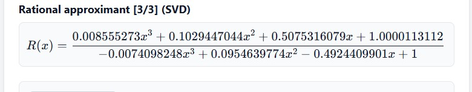

Interactive Numerical Methods Tools
Explore key numerical methods through interactive JavaScript visualizations. Adjust parameters and observe approximations in real time.
Newton's Method Visualizer
Polynomial Interpolation
Polynomial Least Squares Data Fitting
Rational Function Least Squares Data Fitting
Finite Difference Generator with Error Estimates
Detailed Explorations

Newton's Method Visualizer
Animate the iterative root-finding process and observe convergence behavior.
Explore →
Polynomial Interpolation
Construct and visualize interpolating polynomials through given data points.
Explore →
Polynomial Least Squares Data Fitting
Fit polynomials to data using least squares and analyze residuals.
Explore →

Rational Function Least Squares Data Fitting
Approximate data with rational functions via least squares optimization.
Explore →
Finite Difference Generator with Error Estimates
Generate finite difference formulas and estimate truncation errors.
Explore →